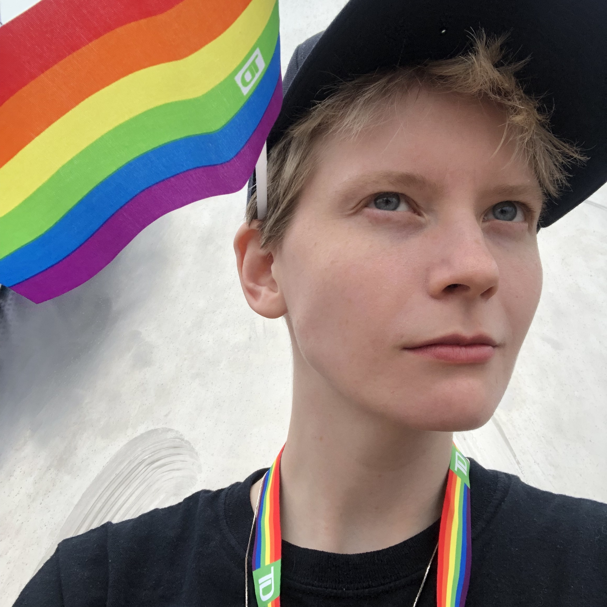
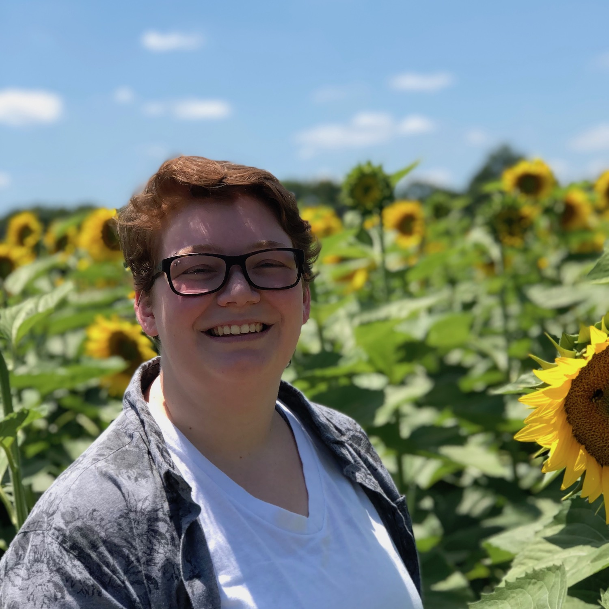

Notice to Prospective Students:
I will be recruiting PhD students to start in Fall 2020.
If you are a prospective PhD student interested in working with me, please apply to the UMSI PhD program.
If you are a current UM masters student or undergraduate student interested in working with me, please email me with your CV/resume and research interests.
I am particularly interested in working with students who want to conduct research on one or more of the following topics:
- Life Transitions and Social Technologies
- Transgender and/or LGBQ+ people and Social Technologies
- Social Media Content Moderation and Marginalized Populations.
Current PhD Students

Dan Delmonaco
he/him
PhD Student, co-advised by Gabi Marcu
research interests:
health information practices, information access, digital resources

Hayden Le
they/them or he/him
PhD Student, co-advised by Libby Hemphill
research interests:
computer-mediated communication, computational social science,
natural language processing, human-computer interaction, behavior
change
Masters Students
Taika Augustaitis
he/him
Masters Student | Information
research interests:
social media, social determinants of health, human-computer interaction, information seeking needs of marginalized communities

Justin Buss
he/him
Masters Student, Information
research interests:
gender, social media, identity formation and management, information behaviors

Dykee Gorrell
she/hers
REMS Visiting Masters Student
research interests:
data science, machine learning algorithms, technology, climate change, food deserts, carceral systems, black transgender women, homelessness

Denny Starks
they/them
Masters Student, Information
research interests:
understanding how transgender and non-binary people of color practice safety and the types of violence they experience in different contexts and environments - to design technology to support their safety
Undergraduate Students

AJ Carter
he/him
Undergraduate Student, Information
research interests:
social media, LGBTQ+, sociocultural anthropology

Shanley Corvite
she/her
Undergraduate Student, Information
research interests:
social media, user experience

Jasmine Glover
she/her
Undergraduate Student, Industrial & Operations Engineering
research interests:
social media, behavior, data analytics

Tianxiao (Sharol) Liu
she/her
Undergraduate Student, Psychology
research interests:
HCI, social media, user experience, public health

Lingbo Wang
she/her
Undergraduate Student, Statistics
research interests:
social media, computational social science, marketing models

Zu Weinger
he/him
Undergraduate Student, Sociology
research interests:
trans people's experiences and interactions with technology, social media, and the world

Brookelyn Wheeler
she/her
Undergraduate Student, Biopsychology, Cognition & Neuroscience
research interests:
human thoughts and behavior